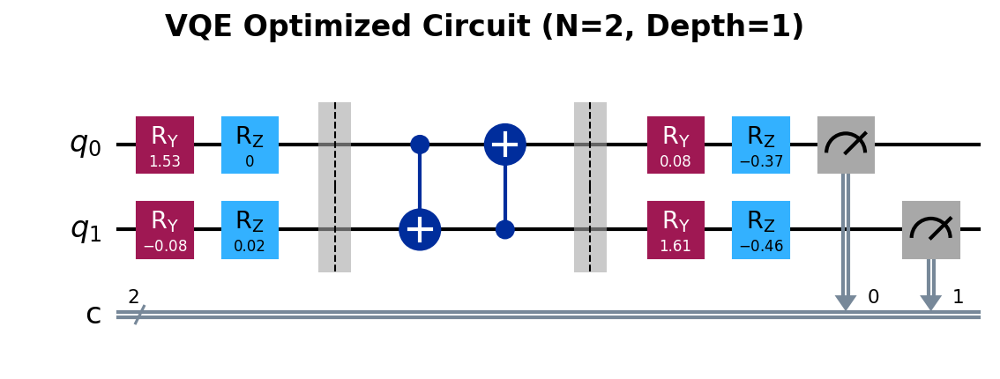

Fase Metodologi
Diagram Alir Utama

Analisis Kuantitatif
- Simple Return (\(R\)): \[ R_t = \frac{P_t - P_{t-1}}{P_{t-1}} \]
- Expected Return (\(\bar{R}\)): \[ \bar{R} = \frac{1}{n} \sum_{t=1}^n R_t \]
- Variance (\(\sigma^2\)): \[ \sigma^2 = \frac{1}{n-1} \sum_{t=1}^n (R_t - \bar{R})^2 \]
- Covariance (\(\sigma_{ij}\)): \[ \sigma_{ij} = \frac{1}{n-1} \sum_{t=1}^n (R_{i,t} - \bar{R}_i)(R_{j,t} - \bar{R}_j) \]
- Log Return (\(r\)): \[ r_t = \ln\left(\frac{P_t}{P_{t-1}}\right) \]
- Expected Return (\(\bar{r}\)): \[ \bar{r} = \frac{1}{n} \sum_{t=1}^n r_t \]
- Variance (\(\sigma^2\)): \[ \sigma^2 = \frac{1}{n-1} \sum_{t=1}^n (r_t - \bar{r})^2 \]
- Covariance (\(\sigma_{ij}\)): \[ \sigma_{ij} = \frac{1}{n-1} \sum_{t=1}^n (r_{i,t} - \bar{r}_i)(r_{j,t} - \bar{r}_j) \]
 ::: {style=“font-size: 0.6em;”}
::: {style=“font-size: 0.6em;”}
- \(P_t\): Harga pada waktu \(t\)
Model Markowitz
Mean-Variance: \[ \mathcal{L}(\mathbf{\omega}) = \sum_{i,j} \sigma_{ij} \omega_i \omega_j - \lambda \sum_i \mu_i \omega_i \]
Binerisasi: \[ \mathcal{L}(\mathbf{x}) = \sum_{i,j} \sigma_{ij} \frac{x_i x_j}{K^2} - \lambda \sum_i \mu_i \frac{x_i}{K} \]
\(\mu_i\): Imbal hasil rata-rata aset ke-\(i\) | \(\sigma_{ij}\): Kovarians antara aset \(i\) dan \(j\) \(\omega_i\): Proporsi bobot kontinu aset ke-\(i\) | \(\lambda\): Parameter toleransi risiko
Langkah 1 — Formulasi Lagrangian Kontinu (Markowitz):
Fungsi biaya Markowitz dalam domain bobot \(\omega_i\):
\[\mathcal{L}(\mathbf{\omega}) = \sum_{i,j} \sigma_{ij} \omega_i \omega_j - \lambda \sum_i \mu_i \omega_i\]
dengan syarat \(\sum_i \omega_i = 1\) dan \(\omega_i \geq 0\).
Langkah 2 — Substitusi Variabel Biner:
Variabel bobot kontinu \(\omega_i\) diubah menjadi variabel biner \(x_i \in \{0, 1\}\) melalui hubungan:
\[\omega_i = \frac{x_i}{K}\]
di mana \(K\) adalah jumlah aset yang dipilih dari total \(N\) kandidat.
Langkah 3 — Substitusi ke Lagrangian:
Substitusi \(\omega_i = x_i/K\) ke dalam fungsi Lagrangian:
\[\mathcal{L}(\mathbf{x}) = \sum_{i,j} \sigma_{ij} \frac{x_i}{K} \frac{x_j}{K} - \lambda \sum_i \mu_i \frac{x_i}{K}\]
\[\therefore \mathcal{L}(\mathbf{x}) = \sum_{i,j} \sigma_{ij} \frac{x_i x_j}{K^2} - \lambda \sum_i \mu_i \frac{x_i}{K}\]
Nilai \(x_i = 1\) merepresentasikan beli, sedangkan \(x_i = 0\) merepresentasikan tidak membeli.
| Simbol | Domain Kontinu | Domain Biner |
|---|---|---|
| Variabel keputusan | \(\omega_i \in [0, 1]\) | \(x_i \in \{0, 1\}\) |
| Kendala | \(\sum \omega_i = 1\) | \(\sum x_i = K\) |
Exact Potential Game (EPG)
- Definisi: Model permainan yang memiliki fungsi potensial global (\(\Phi\)), di mana setiap perubahan utilitas individu akibat perubahan strategi sepenuhnya tercermin oleh perubahan nilai \(\Phi\).
- Makna “Potensial” & “Global”:
- Potensial: Sistem agen berdinamika menuju nilai ekuilibrium (maksimalisasi utilitas), yang secara fundamental ekuivalen dengan prinsip minimisasi energi (\(H = -\Phi\)) dalam fisika fisis.
- Global: \(\Phi\) merangkum seluruh utilitas individu ke dalam satu fungsi skalar tunggal untuk merepresentasikan kualitas konfigurasi strategi permainan secara keseluruhan.
- Kondisi Nash Equilibrium: Perubahan utilitas lokal (\(\Delta u_i\)) sebanding persis dengan perubahan potensial global (\(\Delta \Phi\)). \[ \Delta \Phi = \Phi(s_i', s_{-i}) - \Phi(s_i, s_{-i}) = u_i(s_i', s_{-i}) - u_i(s_i, s_{-i}) \]
- Dinamika sistem akan terhenti dan mencapai Nash Equilibrium ketika tidak ada lagi strategi yang menghasilkan peningkatan potensial (\(\Delta \Phi < 0\)).
EPG pada Alokasi Portofolio
- Transformasi persamaan utilitas Markowitz biner menjadi fungsi potensial global EPG: \[ \Phi(\mathbf{x}) = \sum_{l=1}^N \mu_l \frac{x_l}{K} - \frac{\gamma}{2}\sum_{i=1}^N\sum_{j=1}^N \sigma_{ij} \frac{x_i}{K} \frac{x_j}{K} \]
- dengan \(\gamma\) mendefinisikan faktor penghindaran risiko (risk aversion) pada fungsi utilitas agen.
Penurunan: Dari Model Markowitz Biner ke Fungsi Potensial EPG
Langkah 1 — Lagrangian Biner Markowitz:
Dari transformasi \(\omega_i = x_i/K\), diperoleh fungsi Lagrangian biner:
\[\mathcal{L}(\mathbf{x}) = \sum_{i,j} \sigma_{ij} \frac{x_i x_j}{K^2} - \lambda \sum_i \mu_i \frac{x_i}{K}\]
Langkah 2 — Konversi ke Fungsi Utilitas:
Definisikan faktor penghindaran risiko \(\gamma = 2/\lambda\), sehingga:
\[U(\mathbf{x}) = - \frac{1}{\lambda} \mathcal{L}(\mathbf{x})\]
\[U(\mathbf{x}) = \sum_i \frac{\mu_i}{K} x_i - \frac{\gamma}{2K^2} \sum_{i,j} \sigma_{ij} x_i x_j\]
Langkah 3 — Utilitas Individu Agen ke-\(i\):
\[u_i(\mathbf{x}) = \frac{\mu_i}{K} x_i - \frac{\gamma}{2K^2} x_i \left( \sum_{j \neq i} \sigma_{ij} x_j \right)\]
Jika varians dipisah dari matriks kovarians:
\[u_i(\mathbf{x}) = \frac{\mu_i}{K} x_i - \frac{\gamma}{2K^2} x_i \left( \sigma_{ii} + 2\sum_{j \neq i} \sigma_{ij} x_j \right)\]
Langkah 4 — Fungsi Potensial Global \(\Phi\):
Dari utilitas sistem, fungsi potensial EPG:
\[\Phi(\mathbf{x}) = \sum_{l=1}^N \mu_l \frac{x_l}{K} - \frac{\gamma}{2}\sum_{i=1}^N\sum_{j=1}^N \sigma_{ij} \frac{x_i}{K} \frac{x_j}{K}\]
Langkah 5 — Dekomposisi untuk Verifikasi \(\Delta u_i = \Delta \Phi\):
Dekomposisi suku yang mengandung \(x_i\) (dengan \(x_i^2 = x_i\)):
\[\Phi(\mathbf{x}) = \frac{\mu_i}{K}x_i - \frac{\gamma}{2} \left( \frac{\sigma_{ii}}{K^2}x_i + \frac{2}{K^2}x_i \sum_{j \neq i} \sigma_{ij}x_j \right) + \underbrace{\sum_{l \neq i} \frac{\mu_l}{K}x_l - \frac{\gamma}{2} \sum_{l \neq i} \sum_{m \neq i} \frac{\sigma_{lm}}{K^2}x_l x_m}_{\text{tidak bergantung pada } x_i}\]
Langkah 6 — Insentif Marginal:
\[\Delta \Phi = \Phi(1, \mathbf{x}_{-i}) - \Phi(0, \mathbf{x}_{-i}) = \frac{\mu_i}{K} - \frac{\gamma \sigma_{ii}}{2K^2} - \frac{\gamma}{K^2} \sum_{j \neq i} \sigma_{ij} x_j\]
Karena \(\Delta u_i = \Delta \Phi\) terjamin \(\Rightarrow\) terbukti sebagai Exact Potential Game.
Langkah 7 — Risk Aversion Endogen:
\[\gamma = \frac{1}{1 + e^{(\bar{\mu}_l/\bar{\sigma}_l)}}\]
dengan \(\bar{\mu}_l\) dan \(\bar{\sigma}_l\) dari log returns.
Transformasi EPG ke Model Ising
Fungsi Energi dari Potensial (Markowitz Biner): \[E(\mathbf{x}) = \frac{\gamma}{2K^2}\sum_{i=1}^N\sum_{j=1}^N \sigma_{ij} x_i x_j - \sum_{i=1}^N \frac{\mu_i}{K} x_i\]
Penambahan Fungsi Penalti (QUBO): Penalti untuk memastikan tepat \(K\) aset yang dipilih: \[P(\mathbf{x}) = A\left(\sum_{i=1}^N x_i - K\right)^2\]
Bentuk Total Hamiltonian QUBO: \[E_{total}(\mathbf{x}) = \sum_i Q_{ii} x_i + \sum_{i\ne j} Q_{ij} x_ix_j + AK^2\]
Hamiltonian Ising Akhir: Setelah memetakan variabel biner \(x_i \in \{0,1\}\) ke variabel spin \(s_i \in \{-1,1\}\): \[\boxed{\hat{\mathcal{H}} = - \sum_{i=1}^N h_i \hat{Z}_i - \sum_{i<j}^N J_{ij} \hat{Z}_i \hat{Z}_j + C}\]
Penurunan: Dari Fungsi Potensial Game ke Hamiltonian Ising
Langkah 1 — Fungsi Energi dari Potensial:
Konversi dari maksimasi potensial ke minimasi energi:
\[E(\mathbf{x}) = -\Phi(\mathbf{x})\]
Substitusi \(\Phi\) dari fungsi potensial Markowitz:
\[E(\mathbf{x}) = \frac{\gamma}{2K^2}\sum_{i=1}^N\sum_{j=1}^N \sigma_{ij} x_i x_j - \sum_{i=1}^N \frac{\mu_i}{K} x_i\]
Langkah 2 — Dekomposisi dengan \(x_i^2 = x_i\):
\[E(\mathbf{x}) = \frac{\gamma}{2K^2}\left(\sum_{i=1}^N\sigma_{ii} x_i^2 + \sum_{i\ne j}\sigma_{ij} x_ix_j\right) -\sum_{i=1}^N \frac{\mu_i}{K} x_i\]
\[= \frac{\gamma}{2K^2}\sum_{i=1}^N\sigma_{ii} x_i + \frac{\gamma}{2K^2}\sum_{i\ne j}\sigma_{ij} x_ix_j - \sum_{i=1}^N \frac{\mu_i}{K} x_i\]
\[\therefore E(\mathbf{x}) = \sum_{i=1}^N\left(\frac{\gamma \sigma_{ii}}{2K^2} - \frac{\mu_i}{K}\right)x_i + \sum_{i\ne j}\frac{\gamma \sigma_{ij}}{2K^2} x_ix_j\]
Langkah 3 — Penambahan Fungsi Penalti:
Penalti kuadratik untuk memenuhi kendala \(\sum x_i = K\):
\[P(\mathbf{x}) = A\left(\sum_{i=1}^N x_i - K\right)^2\]
Penjabaran:
\[P(\mathbf{x}) = A\sum_{i=1}^N x_i^2 + A\sum_{i\ne j} x_ix_j - 2AK\sum_{i=1}^N x_i + AK^2\]
Langkah 4 — Energi Total (QUBO):
\[E_{total}(\mathbf{x}) = E(\mathbf{x}) + P(\mathbf{x})\]
\[\therefore E_{total}(\mathbf{x}) = \sum_i \left(\frac{\gamma \sigma_{ii}}{2K^2} + A - \frac{\mu_i}{K} - 2AK\right)x_i + \sum_{i\ne j}\left(\frac{\gamma \sigma_{ij}}{2K^2} + A\right) x_ix_j + AK^2\]
Langkah 5 — Notasi Koefisien QUBO:
\[Q_{ii} = \frac{\gamma \sigma_{ii}}{2K^2}+A-\frac{\mu_i}{K}-2AK\]
\[Q_{ij} = \frac{\gamma \sigma_{ij}}{2K^2}+A\]
Sehingga:
\[E_{total}(\mathbf{x}) = \sum_i Q_{ii} x_i + \sum_{i\ne j} Q_{ij} x_ix_j + AK^2\]
Langkah 6 — Transformasi Affine ke Domain Spin:
Pemetaan biner \(x_i \in \{0, 1\}\) ke spin \(s_i \in \{-1, 1\}\):
\[x_i = \frac{(1 - s_i)}{2}, \quad x_ix_j = \frac{(1-s_i)(1-s_j)}{4}\]
Substitusi:
\[E_{total}(\mathbf{s}) = \sum_i Q_{ii} \frac{1-s_i}{2} + \sum_{i\ne j} Q_{ij} \frac{1 - s_i - s_j + s_is_j}{4} + AK^2\]
\[\therefore E_{total}(\mathbf{s}) = \sum_i \left(- \frac{Q_{ii}}{2} - \sum_{j \neq i} \frac{Q_{ij}}{2}\right) s_i + \sum_{i\ne j} \frac{Q_{ij}}{4} s_i s_j + \left(\sum_i \frac{Q_{ii}}{2} + \sum_{i\ne j} \frac{Q_{ij}}{4} + AK^2\right)\]
Langkah 7 — Identifikasi Parameter Hamiltonian:
| Parameter | Definisi | Makna Fisis |
|---|---|---|
| \(h_i\) | \(- \frac{Q_{ii}}{2} - \sum_{j \neq i} \frac{Q_{ij}}{2}\) | Medan bias lokal |
| \(J_{ij}\) | \(\frac{Q_{ij}}{4}\) | Kopling antar spin |
| \(C\) | \(\sum_i \frac{Q_{ii}}{2} + \sum_{i\ne j} \frac{Q_{ij}}{4} + AK^2\) | Konstanta energi |
Hasil Akhir — Hamiltonian Ising:
\[\boxed{\hat{\mathcal{H}} = - \sum_{i=1}^N h_i \hat{Z}_i - \sum_{i<j}^N J_{ij} \hat{Z}_i \hat{Z}_j + C}\]
Desain Sirkuit Kuantum

::: {style=“font-size: 0.7em; text-align: center;”}Matriks Rotasi \(U_q(\theta)\) untuk 2 Qubit
Berdasarkan definisi gerbang rotasi \(R_y(\theta)\) dan \(R_z(\theta)\): \[ \begin{align} U_{1q}(\theta) &= R_z(\theta_{1z}) R_y(\theta_{1y}) \\ &= \begin{pmatrix} e^{-i\theta_{1z}/2} & 0 \\ 0 & e^{i\theta_{1z}/2} \end{pmatrix} \begin{pmatrix} \cos(\theta_{1y}/2) & -\sin(\theta_{1y}/2) \\ \sin(\theta_{1y}/2) & \cos(\theta_{1y}/2) \end{pmatrix} \\ &= \begin{pmatrix} e^{-i\theta_{1z}/2} \cos(\theta_{1y}/2) & -e^{-i\theta_{1z}/2} \sin(\theta_{1y}/2) \\ e^{i\theta_{1z}/2} \sin(\theta_{1y}/2) & e^{i\theta_{1z}/2} \cos(\theta_{1y}/2) \end{pmatrix} \end{align} \]
Maka untuk sistem 2 qubit: \[ \begin{align} U_{q}(\theta) &= [R_z(\theta_{1z}) R_y(\theta_{1y})] \otimes [R_z(\theta_{2z}) R_y(\theta_{2y})]\\ &= \begin{pmatrix} e^{-i\theta_{1z}/2} \cos(\theta_{1y}/2) & -e^{-i\theta_{1z}/2} \sin(\theta_{1y}/2) \\ e^{i\theta_{1z}/2} \sin(\theta_{1y}/2) & e^{i\theta_{1z}/2} \cos(\theta_{1y}/2) \end{pmatrix} \otimes \begin{pmatrix} e^{-i\theta_{2z}/2} \cos(\theta_{2y}/2) & -e^{-i\theta_{2z}/2} \sin(\theta_{2y}/2) \\ e^{i\theta_{2z}/2} \sin(\theta_{2y}/2) & e^{i\theta_{2z}/2} \cos(\theta_{2y}/2) \end{pmatrix} \\ &= \begin{pmatrix} e^{-i(\theta_{1z}+\theta_{2z})/2} c_1c_2 & e^{-i(\theta_{1z}+\theta_{2z})/2} c_1s_2 & e^{-i(\theta_{1z}+\theta_{2z})/2} s_1c_2 & e^{-i(\theta_{1z}+\theta_{2z})/2} s_1s_2 \\ e^{-i\theta_{1z}/2}e^{i\theta_{2z}/2} c_1s_2& e^{-i\theta_{1z}/2}e^{i\theta_{2z}/2} c_1c_2& e^{-i\theta_{1z}/2}e^{i\theta_{2z}/2} s_1s_2& e^{-i\theta_{1z}/2}e^{i\theta_{2z}/2} s_1c_2 \\ e^{i\theta_{1z}/2}e^{-i\theta_{2z}/2} s_1c_2& e^{i\theta_{1z}/2}e^{-i\theta_{2z}/2} s_1s_2& e^{i\theta_{1z}/2}e^{-i\theta_{2z}/2} c_1c_2& e^{i\theta_{1z}/2}e^{-i\theta_{2z}/2} c_1s_2 \\ e^{i(\theta_{1z}+\theta_{2z})/2} s_1s_2& e^{i(\theta_{1z}+\theta_{2z})/2} s_1c_2& e^{i(\theta_{1z}+\theta_{2z})/2} c_1s_2& e^{i(\theta_{1z}+\theta_{2z})/2} c_1c_2 \end{pmatrix} \end{align} \] dengan \[ c_i=\cos\frac{\theta_{iy}}2,\qquad s_i=\sin\frac{\theta_{iy}}2. \]
Matriks Gerbang Keterbelitan (\(U_{ent}\)) untuk 2 Qubit
Untuk lapisan keterbelitan, secara umum didefinisikan: \[ U_{ent} = CNOT_{(N-1,0)} \prod_{q=0}^{N-2} CNOT_{(q,q+1)} \]
Untuk sistem 2 qubit, hal ini mereduksi menjadi: \[ U_{ent} = CNOT_{(1,0)} \cdot CNOT_{(0,1)} \]
di mana matriks untuk masing-masing gerbang adalah: \[ CNOT_{(1,0)} = \begin{pmatrix} 1 & 0 & 0 & 0 \\ 0 & 0 & 0 & 1 \\ 0 & 0 & 1 & 0 \\ 0 & 1 & 0 & 0 \end{pmatrix} \quad CNOT_{(0,1)} = \begin{pmatrix} 1 & 0 & 0 & 0 \\ 0 & 1 & 0 & 0 \\ 0 & 0 & 0 & 1 \\ 0 & 0 & 1 & 0 \end{pmatrix} \]
Sehingga matriks total keterbelitannya adalah: \[ U_{ent} = \begin{pmatrix} 1 & 0 & 0 & 0 \\ 0 & 0 & 0 & 1 \\ 0 & 0 & 1 & 0 \\ 0 & 1 & 0 & 0 \end{pmatrix} \cdot \begin{pmatrix} 1 & 0 & 0 & 0 \\ 0 & 1 & 0 & 0 \\ 0 & 0 & 0 & 1 \\ 0 & 0 & 1 & 0 \end{pmatrix} = \begin{pmatrix} 1 & 0 & 0 & 0 \\ 0 & 0 & 1 & 0 \\ 0 & 0 & 0 & 1 \\ 0 & 1 & 0 & 0 \end{pmatrix} \]
Optimizer SPSA
SPSA (Simultaneous Perturbation Stochastic Approximation)
- Inovasi: Mengestimasi gradien seluruh parameter secara simultan hanya menggunakan dua pengukuran (satu vektor perturbasi acak \(\Delta\)). \[ \hat{g}_k = \frac{E(\theta_k + c_k \Delta_k) - E(\theta_k - c_k \Delta_k)}{2 c_k \Delta_k} \]
- Dengan ekspektasi estimasi gradien yang terbukti ekuivalen dengan gradien eksak: \[ \mathbb{E} \left[ \hat{g}_k \right] = \nabla E(\theta_k) \]
Penurunan: Estimator Gradien SPSA
Langkah 1 — Vektor Perturbasi Acak:
\[\Delta_k = (\Delta_{k,1}, \Delta_{k,2}, \ldots, \Delta_{k,p}), \quad \Delta_{k,i} = \begin{cases} +1, & P = 1/2 \\ -1, & P = 1/2 \end{cases}\]
Setiap komponen mengikuti distribusi Rademacher.
Langkah 2 — Evaluasi Fungsi Biaya:
\[E_+ = E(\boldsymbol{\theta}_k + c_k\Delta_k), \quad E_- = E(\boldsymbol{\theta}_k - c_k\Delta_k)\]
Langkah 3 — Ekspansi Taylor:
\[E_+ = E(\boldsymbol{\theta}_k) + c_k \sum_{j=1}^{p} \Delta_j \frac{\partial E}{\partial \theta_j} + \frac{1}{2}c_k^2 \sum_{j=1}^{p} \Delta_j^2 \frac{\partial^2 E}{\partial \theta_j^2} + O(c_k^3)\]
\[E_- = E(\boldsymbol{\theta}_k) - c_k \sum_{j=1}^{p} \Delta_j \frac{\partial E}{\partial \theta_j} + \frac{1}{2}c_k^2 \sum_{j=1}^{p} \Delta_j^2 \frac{\partial^2 E}{\partial \theta_j^2} + O(c_k^3)\]
Langkah 4 — Selisih (suku genap saling hilang):
\[E_+ - E_- = 2c_k \sum_{j=1}^{p} \Delta_j \frac{\partial E}{\partial \theta_j} + O(c_k^3)\]
Langkah 5 — Estimator Gradien:
\[\hat{g}_i = \frac{E_+ - E_-}{2c_k \Delta_i} = \frac{\partial E}{\partial \theta_i} + \sum_{j \neq i} \frac{\Delta_j}{\Delta_i} \frac{\partial E}{\partial \theta_j}\]
Langkah 6 — Bukti Tak-Bias:
Karena \(\Delta_j\) independen dan \(\mathbb{E}\left[\frac{\Delta_j}{\Delta_i}\right] = 0\) untuk \(j \neq i\):
\[\mathbb{E}[\hat{g}_i] = \frac{\partial E}{\partial \theta_i} + \sum_{j \neq i} \underbrace{\mathbb{E}\left[\frac{\Delta_j}{\Delta_i}\right]}_{= 0} \frac{\partial E}{\partial \theta_j} = \frac{\partial E}{\partial \theta_i}\]
\[\therefore \boxed{\mathbb{E}[\hat{\mathbf{g}}_k] = \nabla E(\boldsymbol{\theta}_k)}\]
Langkah 7 — Pembaruan Parameter & Peluruhan:
\[\boldsymbol{\theta}_{k+1} = \boldsymbol{\theta}_k - a_k \hat{\mathbf{g}}_k\]
dengan hiperparameter peluruhan:
\[a_k = \frac{a}{(A+k+1)^\alpha}, \quad c_k = \frac{c}{(k+1)^\gamma}\]
Evaluasi Distribusi Probabilitas (Entropi)
Pemanfaatan Entropi Von Neumann dalam memantau jejak persebaran probabilitas di titik konvergensi akhir VQE.
Sistem \(N=2\)
| Parameter | Nilai |
|---|---|
| Probabilitas mayoritas (\(p_1\)) | \(0{,}98\) |
| Sisa probabilitas (\(p_\text{rest}\)) | \(0{,}02\) |
Kalkulasi: \[ S = -(0{,}98 \cdot \log_2(0{,}98) + 0{,}02 \cdot \log_2(0{,}02)) \approx 0{,}1414 \text{ bit} \] → Probabilitas sangat tersentralisasi dan stabil.
Sistem \(N=4\)
| Parameter | Nilai |
|---|---|
| Prob. Optimal (\(p_1\)) | \(0{,}94\) |
| Prob. Alternatif (\(p_2, p_3, p_4\)) | @ \(0{,}02\) |
Kalkulasi: \[ S = -\left(0{,}94 \log_2(0{,}94) + 3 \times (0{,}02 \log_2(0{,}02))\right) \approx 0{,}4225 \text{ bit} \] → Jauh di bawah batas entropi maksimum \(\log_2(4) = 2\) bit → deteksi ground state handal.
Generalisasi: Dari Entropi Shannon ke Entropi Von Neumann
Langkah 1 — Entropi Shannon (Klasik):
Untuk distribusi probabilitas diskrit \(p_i\), entropi informasi didefinisikan sebagai:
\[H = - \sum_i p_i \log_2 (p_i)\]
Langkah 2 — Definisi Entropi Von Neumann:
Dalam mekanika kuantum, probabilitas digantikan oleh operator densitas \(\rho\). Entropi Von Neumann didefinisikan langsung melalui fungsi operator tersebut:
\[S(\rho) = -\text{Tr}(\rho \log_2 \rho)\]
Langkah 3 — Teorema Spektral:
Karena operator densitas \(\rho\) bersifat Hermitian, ia selalu dapat didiagonalisasi (dekomposisi spektral):
\[\rho = U \Lambda U^\dagger\]
dengan \(\Lambda\) adalah matriks diagonal yang berisi nilai eigen \(\lambda_i\), dan \(U\) adalah matriks uniter.
Langkah 4 — Logaritma Matriks:
Berdasarkan definisi fungsi matriks, logaritma diterapkan pada nilai eigennya:
\[\log_2(\rho) = U (\log_2 \Lambda) U^\dagger\]
Langkah 5 — Operasi Trace dan Invariansi:
Kita kalikan \(\rho\) dengan \(\log_2(\rho)\):
\[\rho \log_2(\rho) = (U \Lambda U^\dagger) (U (\log_2 \Lambda) U^\dagger) = U (\Lambda \log_2 \Lambda) U^\dagger\]
Gunakan sifat invariansi trace (\(\text{Tr}(U A U^\dagger) = \text{Tr}(A)\)):
\[S(\rho) = -\text{Tr}(U (\Lambda \log_2 \Lambda) U^\dagger) = -\text{Tr}(\Lambda \log_2 \Lambda)\]
Karena \(\Lambda\) adalah matriks diagonal, perhitungan trace-nya hanyalah jumlahan dari elemen diagonal:
\[\boxed{S(\rho) = -\sum_i \lambda_i \log_2 (\lambda_i)}\]
Langkah 6 — Reduksi ke Bentuk Klasik:
Jika \(\rho\) sudah dalam bentuk diagonal murni di mana matriksnya mewakili campuran klasik murni, maka nilai eigen \(\lambda_i\) akan sama dengan probabilitas \(p_i\), sehingga rumusnya akan mereduksi secara identik menjadi Entropi Shannon biasa.
Algoritma Evaluasi: Backtesting
Skema Rolling Window Backtesting:
Procedure BacktestLoop(Data, K)
1. For t in Timeline:
2. mu, Sigma, gamma <- DataPreprocessing(t)
3. H <- BuildHamiltonian(mu, Sigma, gamma)
4. x_NE <- NashSBR(H) // Pencarian Titik Ekuilibrium
5. x_best_t <- AdaptiveVQE(H, x_NE) // GT-VQE Optimization
6. R_t <- ExecuteRebalance(x_best_t) // Pindah Aset Berdasarkan Sinyal
7. Return PerformanceMetrics
EndProcedure- Siklus dieksekusi secara iteratif melalui jendela waktu berjalan (sliding window) untuk mengevaluasi adaptabilitas model terhadap fluktuasi riil data historis pasar.
Perhitungan Metrik Performa Finansial
Untuk membandingkan performa model GT-VQE dengan Equal Weight dan optimasi klasik (SLSQP), parameter evaluasi yang dihitung mencakup:
- Return Kumulatif: Mengukur total pertumbuhan persentase modal selama periode simulasi. \[ R_{cum} = \prod_{t=1}^T (1 + R_t) - 1 \]
- Sharpe Ratio: Rasio antara return ekspektasi terhadap risiko volatilitas portofolio (\(\sigma_p\)). \[ \text{Sharpe} = \frac{\bar{R}_p - R_f}{\sigma_p} \]
- Maximum Drawdown (MDD): Risiko kerugian maksimal dari puncak historis portofolio. \[ MDD = \max \frac{P_{peak} - P_{t}}{P_{peak}} \]
- Equal Weight & SLSQP: Sebagai benchmark, nilai metrik juga dievaluasi untuk portofolio \(w_i = 1/K\) (Equal Weight) dan penyelesaian Lagrangian kontinu berbasis Sequential Least Squares Programming (SLSQP).
Algoritma Sequential Least Squares Programming untuk menyelesaikan sub-masalah pemrograman kuadratik sebagai standar komparasi.
Procedure SLSQPOptimizer(mu, Sigma, gamma)
1. w_0 <- InitialWeights(1/N)
2. B_0 <- I // Inisialisasi Hessian Identitas
3. For k = 0, 1, 2, ... until converged:
4. g_k <- gamma * Sigma * w_k - mu // Hitung Gradien
5. Solve Sub-QP: min(g_k^T d + 0.5 d^T B_k d) s.t. constraints
6. a_k <- LineSearch(w_k, d)
7. w_{k+1} <- w_k + a_k * d
8. s_k <- w_{k+1} - w_k, y_k <- g_{k+1} - g_k
9. B_{k+1} <- UpdateBFGS(B_k, s_k, y_k)
10. Return w_final
EndProcedure